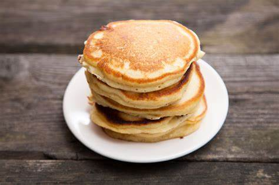

My Recipe
I enjoy making waffles as they are delicious and a nice treat for breakfast. This batter can also be used to make pancakes as not everyone will have a waffle maker. So, this multipurpose batter recipe is very versatile.
Makes 8-10 waffles/pancakes.

- 1 large egg
- 1 tbsp of sugar
- 1 cup of flour
- ¼tsp of salt
- 2 tsp baking powder
- 1 cup of milk
- 2 tbsp of softened butter or margarine
Instructions:
- Mix the flour, sugar, baking soda and salt together in a medium sized bowl.
- In a separate bowl, mix the egg, milk and butter or margarine.
- Add the wet ingredients to the dry ingredients and mix until fully incorporated.
- Add 3½ tbsp to the pan or coat the bottom of the waffle maker. Cook until golden brown.
- Finally, plate and add toppings of your choice.